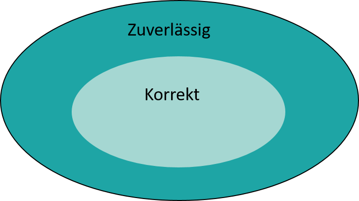

Marcel Lüthi
Departement Mathematik und Informatik
Klassifikation von Qualitätsmerkmalen
Externe Qualitätsmerkmale
Funktional
Für Benutzer ersichtlich
Interne Qualitätsmerkmale
Nichtfunktional
Von Interesse für Entwickler
Interne Qualität beeinflusst externe Qualität!
Klassifikation von Qualitätsmerkmalen
Produkt vs. Prozess Merkmale
Ziel - Produkt zu entwickeln
Prozess - Wie entwickeln wir das Produkt
Prozessqualität beeinflusst Produktqualität
Einige Qualitätsmerkmale von Software
Korrektheit (correctness)
Zuverlässigkeit (reliability)
Robustheit (robustness)
Effizienz (performance)
Benutzbarkeit (usability)
Testbarkeit (verifiability)
Wartbarkeit (maintainability)
Reparierbarkeit (repairability)
Erweiterbarkeit (evolvability)
Wiederverwendbarkeit (reusability)
Portabilität (portability)
Verständlichkeit (understandability)
Interoperabilität (interoperability)
Korrektheit
Software ist korrekt, when sie die spezifizierten funktionalen Anforderungen erfüllt
Erfordert, dass Anforderungen spezifiziert wurden
Formale Spezifikationen erlauben es Korrektheit zu beweisen oder zu falsifizieren (mit Gegenbeispiel)
Korrektheit (2)
Korrektheit ist absolut
Es gib kein "ein bisschen falsch"
Es gibt keine Metrik für Falschheit
Was passiert wenn Spezifikationen falsch sind?
Von falschen Anforderungen abgeleitet ?
Falsche Businesslogik?
Zuverlässigkeit
Intuitiv: Der Benutzer kann sich auf die Software verlassen
Formal: Wahrscheinlichkeit, dass in einem bestimmten Zeitinterval kein Fehler auftritt
Zuverlässigkeit
Bei korrekter Spezifikation gilt:

Quiz
Ist dieses Programm korrekt?
Ist es zuverlässig?
double plus(double a, double b) {
double sum = a + b;
Random r = new Random();
if (Math.abs(r.nextGaussian()) < 1000) {
return sum;
} else {
return sum + 1;
}
}
Robustheit
Software verhält sich auch unter unvorhergesehenen Umständen sinnvoll
Schwierig formal zu spezifizieren
Beispiele:
Hardware Ausfall
Falscher Input
Robustheit und Korrektheit
Robustheit und Korrektheit sind eng verwandt.
Anforderungen in Spezifikation -> Korrektheit
Anforderung nicht spezifiziert -> Robustheit
Effizienz (Performance)
Effizienter Gebrauch von System-ressourcen (Speicher/CPU/Netzwerk)
Kann verifiziert werden
Theoretisch: Komplexitätstheorie
Praktisch: Simulation
Beeinflusst Skalierbarkeit
Verifizierbarkeit
Wie einfach ist es Eigenschaften zu verifizieren
Wichtig z.B. für Securityaudits oder Ressourcen-kritische Systeme
Vorwiegend internes Qualitätsmerkmal
Wartbarkeit (1)
Software ist nicht das ...
Wartbarkeit (1)
sondern das!
Wartbarkeit (2)
Wie einfach ist es die Software weiterzuentwickeln
Hauptkategorien Softwarewartung:
Fehlerbehebung
Anpassung an neue Anforderungen (Hardware/Betriebssystem,...)
Verbesserungen (Wartbarkeit, Performance, ...)
80/20 Regel
Wartungs machen ca 80 % der Gesamtkosten aus.
Entwicklungskosten 20 %
Wiederverwendbarkeit
Wie einfach ist es die Software in anderem Kontext wiederzuverwenden